Deux ans et deux mois en alternance chez Wiztivi, comme designer UI/UX. Avec les équipes design et développement, j’ai conçu des interfaces et des concepts pour la télévision connectée, dont les réglages des décodeurs SFR.
Concevoir pour la télécommande
Sur une télévision, pas de souris ni de tactile : on navigue à la télécommande, d’un élément à l’autre. Chaque déplacement doit être prévisible, l’élément sélectionné doit se repérer tout de suite et la densité d’information doit rester lisible à distance.
J’ai travaillé pour des acteurs des médias et des télécoms : TF1, France Télévisions, SFR, l’opérateur israélien HOT, et Altice Média sur des projets et des prototypes. Chaque client arrivait avec ses demandes et son identité. Les composants, eux, devaient rester cohérents et réutilisables d’un projet à l’autre.
Mon rôle et ma démarche
J’ai travaillé directement sur tous les écrans présentés ici : parcours, maquettes, prototypes, puis déclinaison de chaque interface dans ses différents états. J’ai aussi contribué au design system Timeless, utilisé sur TV et mobile.
Pour SFR, nous avons conçu en équipe l’interface des décodeurs TV. Le but : simplifier la navigation dans les menus, la gestion des enregistrements et celle du stockage. J’ai exploré trois bannières d’accès aux paramètres, puis présenté une version intégrée à l’interface. Pour la refonte des réglages, j’ai travaillé la grille et plusieurs mises en page, puis décliné les écrans : télécommande, association Bluetooth, code personnel, mise en veille.
Les maquettes évoluaient au fil des retours des autres designers, du manager et des développeurs. L’équipe travaillait en Kanban, avec des priorités revues chaque semaine. Pas de campagne formelle de recherche utilisateur sur ces projets : le travail reposait sur la conception et l’itération des maquettes.
En parallèle, j’ai réalisé des concepts et des prototypes pour explorer de nouvelles fonctionnalités : Principle pour présenter les interactions, After Effects pour animer une interface TV destinée aux enfants.
Navigation et interfaces TV
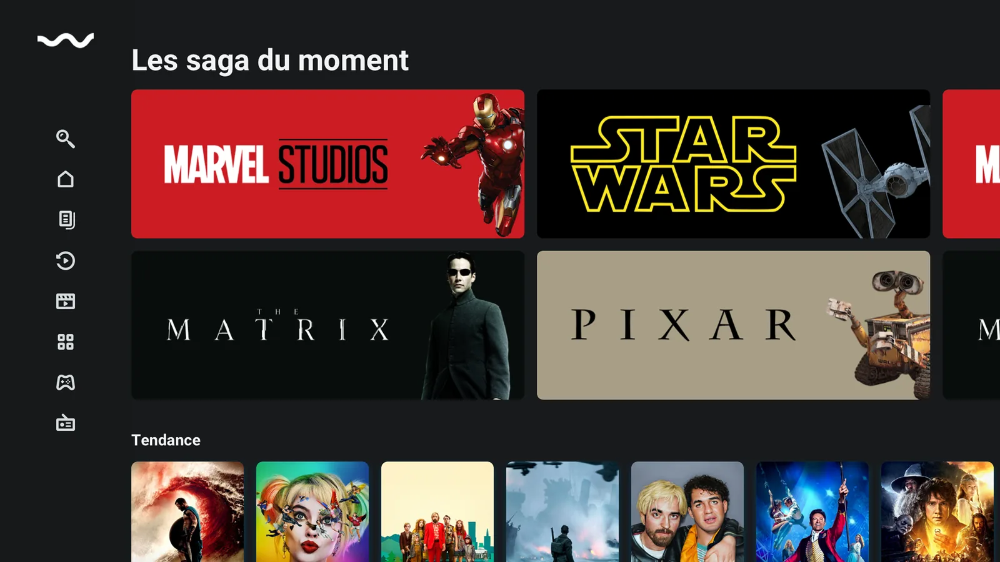
Explorer les contenus
une proposition de mise en avant de sagas et de contenus tendance.
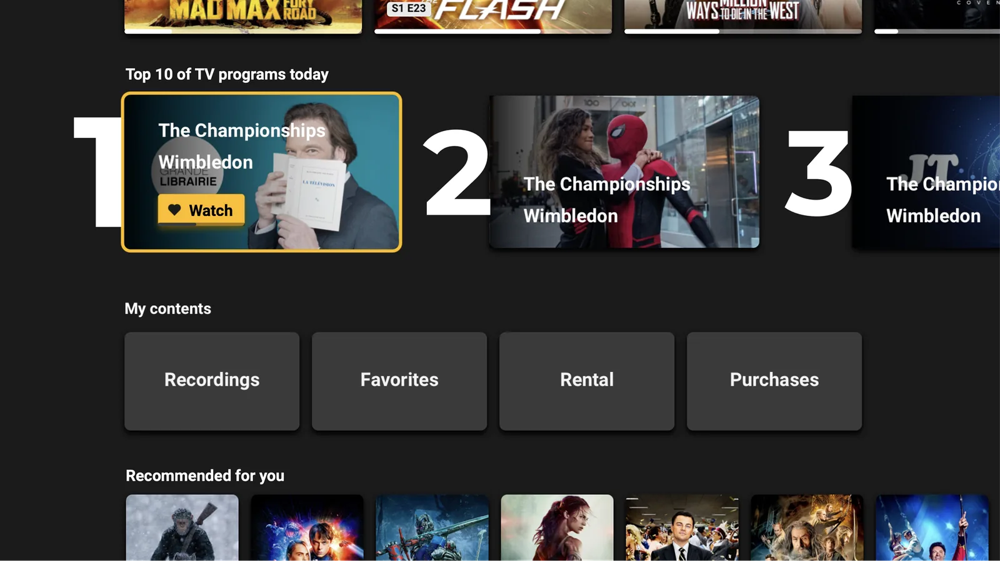
Navigation
une interface de navigation entre les programmes et les contenus personnels.
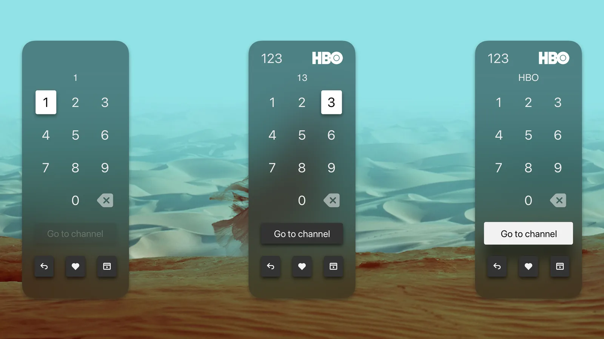
Télécommande virtuelle
trois états du pavé numérique, de la saisie à la sélection d’une chaîne.
Écrans SFR et concepts d’interface
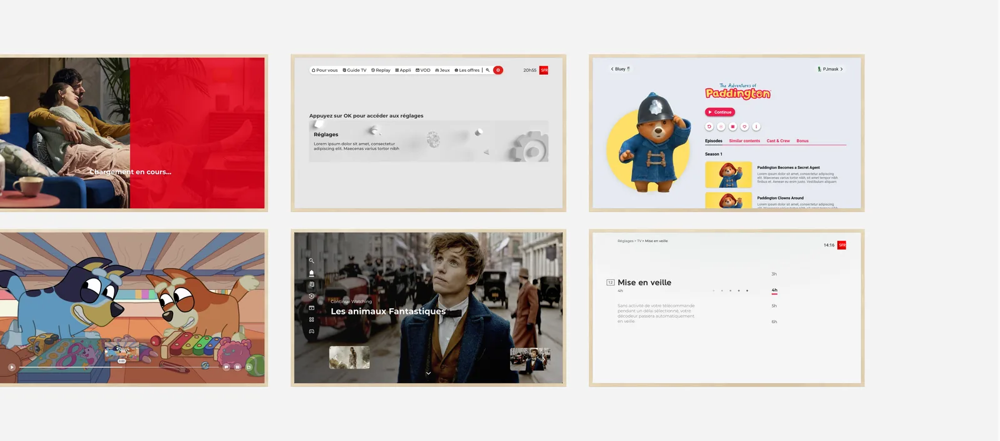
Interfaces TV
des écrans conçus pour un opérateur français et des prototypes d’interface pour des concepts d’application.
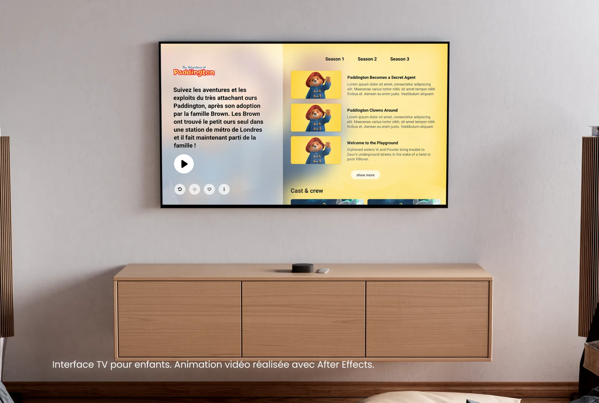
Concept
un concept d’interface TV pour enfants, animé avec After Effects et présenté dans son contexte.
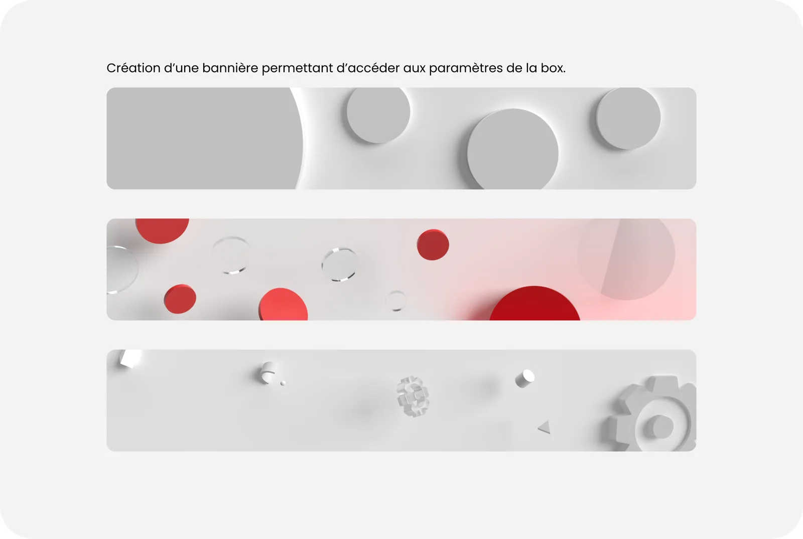
Accéder aux réglages
trois propositions de bannière pour accéder aux paramètres de la box.
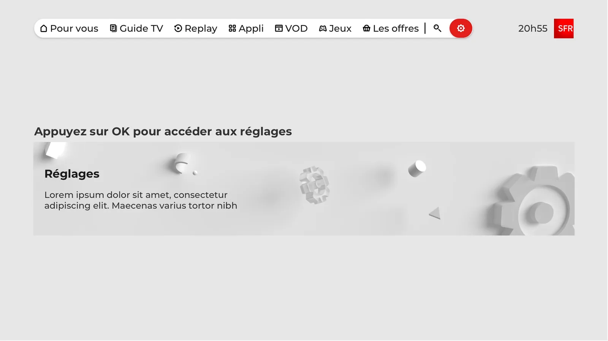
Bannière de réglages
la version finale de la bannière intégrée dans l’interface de la box.
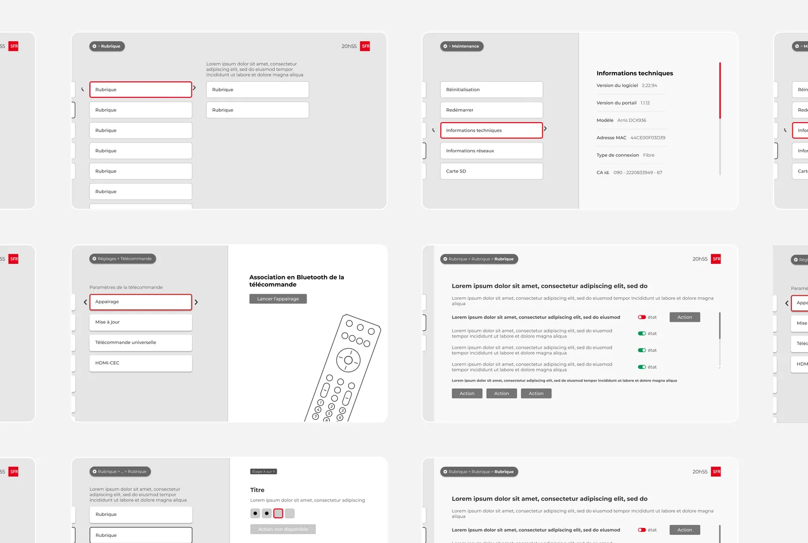
Parcours de configuration
exploration d’une grille et de mises en page pour les réglages, puis déclinaison des écrans.
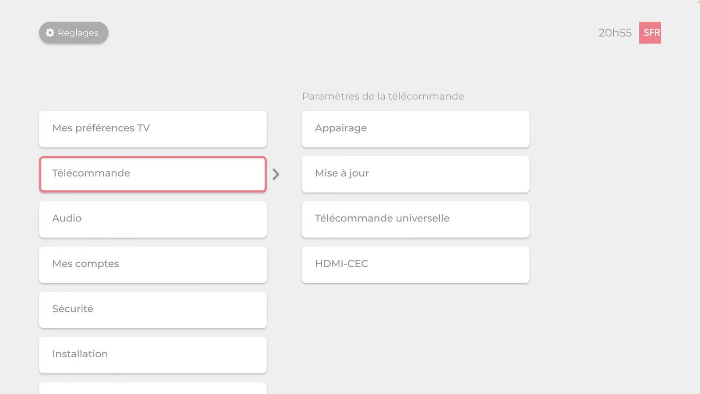
Télécommande
accès aux options de télécommande et d’appairage.
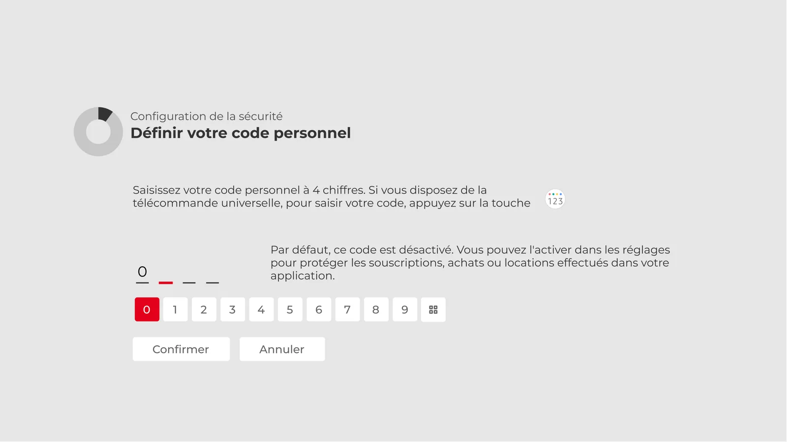
Code personnel
définir un code personnel depuis l’interface TV.
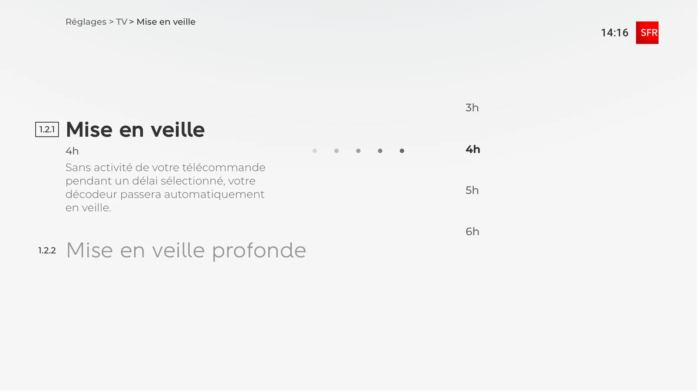
Mise en veille
choix du délai avant mise en veille.
Guide TV et pictogrammes sportifs pour SFR
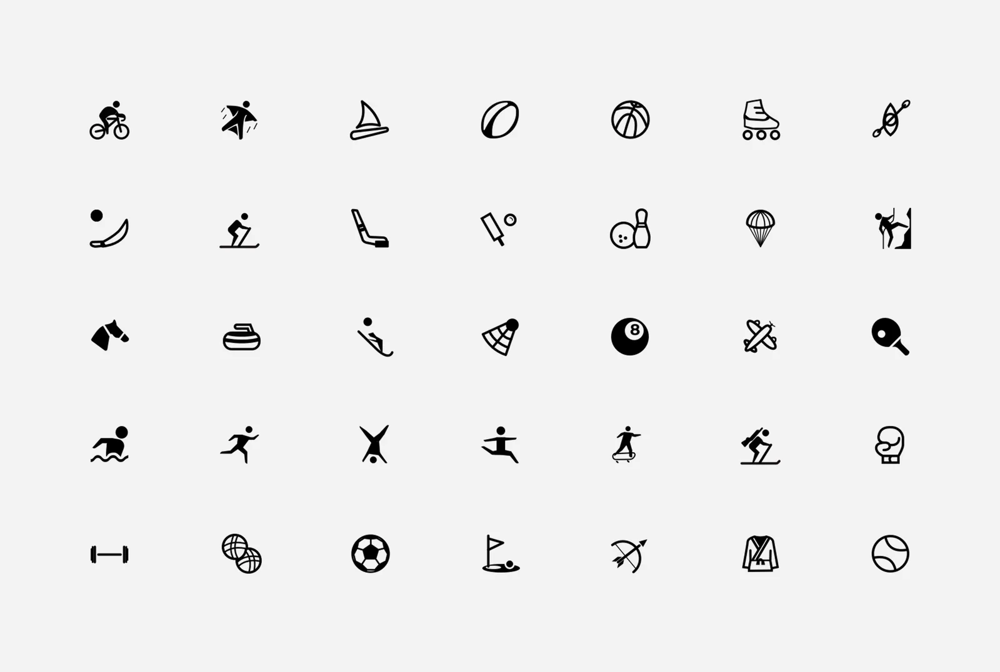
Iconographie sportive
une série de pictogrammes sportifs créée à la demande de SFR pour les Jeux olympiques de 2022.
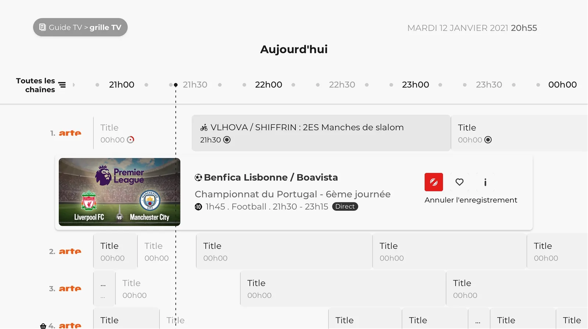
Guide TV
l’icône en situation, dans une grille de programmes.
Sport et concepts
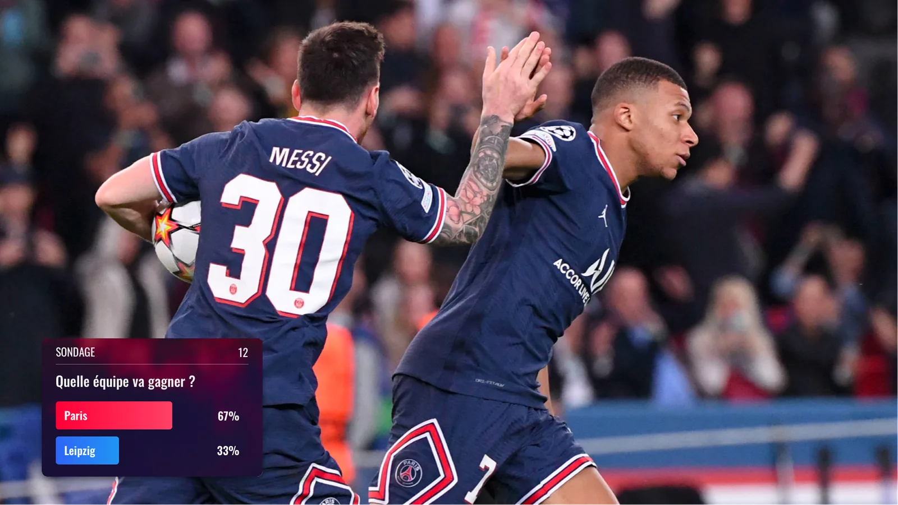
Sondage pendant un match
un vote sur l’équipe gagnante, affiché par-dessus le match.
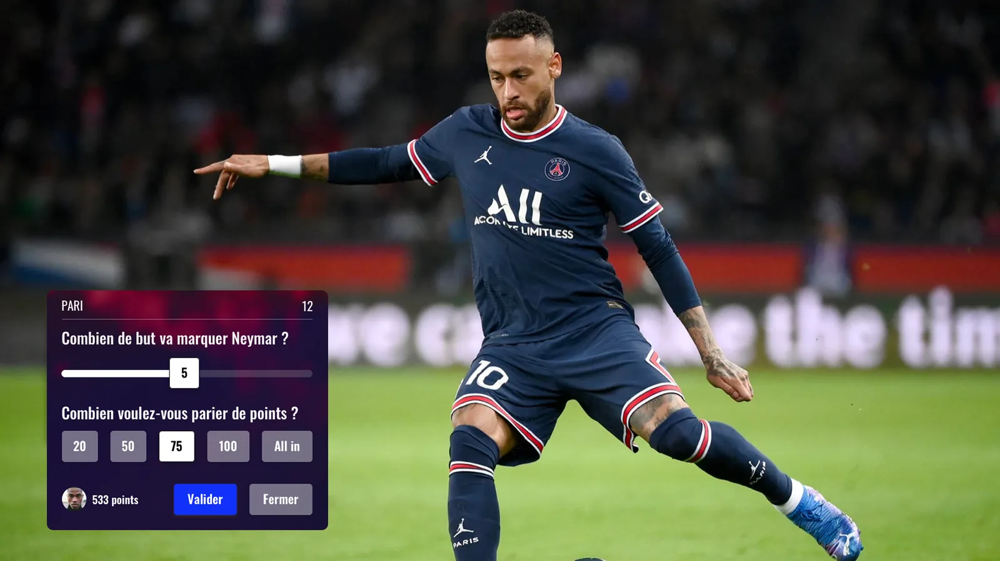
Pronostics pendant un match
participer à des paris depuis l’application TV.
Ce que j’en retiens
La TV m’a appris à concevoir un écran à partir de la sélection : où elle arrive, où elle repart, comment elle se voit. Si l’état de sélection est flou, toute la navigation l’est aussi. C’est là que j’ai pris l’habitude de dessiner chaque état d’un écran, et de décliner les parcours jusqu’au bout.
Les maquettes étaient livrées régulièrement, avec des retours globalement très positifs. Travailler au quotidien avec les devs m’a appris à préparer un handoff exploitable : parcours complets, états, variantes. Ma contribution à Timeless reliait ces écrans à des composants partagés, cohérents entre TV et mobile.